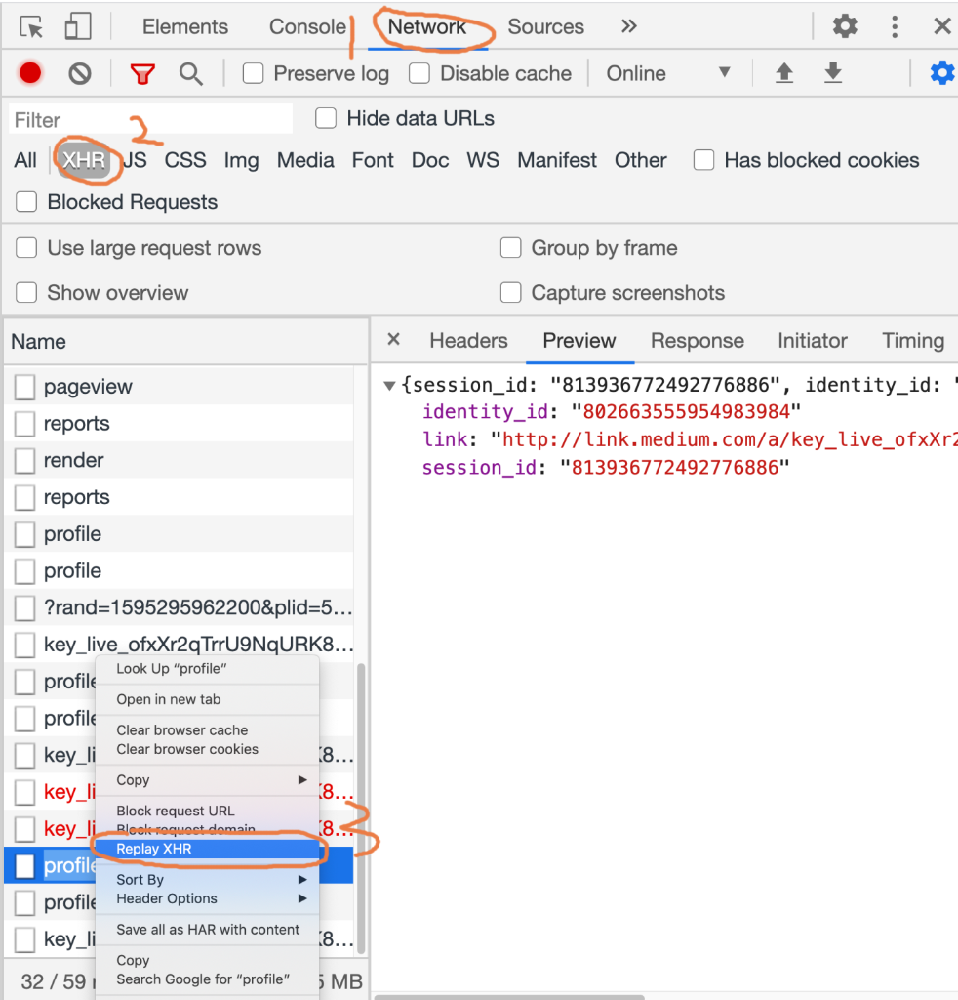

Продвинутые техники и стратегии веб-парсинга
Написание базового парсера, отправляющего GET-запрос и ищущего тег в HTML — это лишь 10% работы. Основная сложность в современном скрапинге (по состоянию на 2026 год) заключается в том, чтобы сделать этот процесс стабильным, масштабируемым и незаметным для антифрод-систем. Чтобы парсинг был эффективным и не приводил к мгновенной блокировке IP-адреса, необходимо применять сложные многоуровневые стратегии обхода страниц и маскировки.
1. Маскировка на уровне HTTP-запросов
Ротация User-Agent и Заголовков
Первая линия защиты любого сервера — анализ заголовков HTTP-запроса. Заголовок User-Agent сообщает серверу, какой браузер делает запрос. Если он пустой или содержит стандартное значение библиотеки (например, python-requests/2.31.0 или Scrapy/2.11), вас заблокируют моментально. Необходимо использовать массив реальных юзер-агентов от последних версий Chrome, Firefox и Safari, случайным образом меняя их при каждом запросе.
Более продвинутые системы анализируют порядок следования заголовков, наличие специфичных для браузера полей (Sec-Ch-Ua, Accept-Language). Скрапер должен отправлять заголовки в точности так, как это делает реальный браузер (Browser Header Impersonation).
Использование пулов прокси (Proxy Rotation)
При отправке сотен запросов в минуту с одного IP-адреса, любая система безопасности, от Nginx Rate Limiting до Cloudflare, выдаст бан. Использование пула качественных прокси позволяет распределить запросы так, будто они исходят от тысяч реальных пользователей из разных стран.
Дешевые серверные (Datacenter) прокси часто блокируются целыми подсетями. Для парсинга сложных сайтов (Amazon, Instagram) применяются резидентные прокси (Residential Proxies) — это IP-адреса реальных домашних компьютеров и смартфонов, предоставляемые провайдерами ISP. Их блокировка проблематична, так как вместе со скрапером пострадают реальные абоненты.
2. Парсинг через скрытые API (XHR/Fetch Reverse Engineering)
Многие современные сайты (SPA-приложения на React, Vue) не вшивают данные в HTML-код. Вместо этого, при загрузке страницы, JavaScript-код отправляет фоновые запросы (XHR или Fetch) к внутренним API серверам в формате JSON или GraphQL, и уже после этого отрисовывает карточки товаров на экране.
Вместо того, чтобы поднимать тяжелый Selenium для рендеринга JS или пытаться вырезать JSON из тегов <script> с помощью регулярных выражений, опытные инженеры занимаются реверс-инжинирингом API:
- Открыть вкладку Network (Сеть) в инструментах разработчика браузера (F12).
- Перезагрузить страницу и включить фильтр по XHR / Fetch.
- Найти запрос, который в ответе (Preview/Response) возвращает структурированный JSON с нужными данными (ценами, отзывами).
- Скопировать URL этого запроса, его метод (GET/POST) и необходимые заголовки авторизации (например, Bearer токен).
- Воспроизвести этот запрос в своем Python-коде.

Преимущество подхода: Вы получаете идеально структурированные данные (JSON), вам не нужно писать сложные XPath-селекторы, которые сломаются при смене дизайна сайта, а скорость парсинга возрастает в десятки раз.
3. TLS Fingerprinting (Отпечатки SSL/TLS)
Даже если вы используете резидентные прокси и скопировали все заголовки из Chrome, сервер всё равно может понять, что запрос отправляет скрипт на Python. Как? Через параметры установления защищенного соединения (TLS Handshake).
Библиотеки вроде requests или urllib используют системный OpenSSL, который отправляет наборы шифров (Cipher Suites) и расширений (Extensions) в определенном порядке. Этот порядок (отпечаток) называется JA3 fingerprint. У Python он один, у Chrome — совершенно другой, у Safari на iPhone — третий. Антибот-системы сверяют User-Agent (где вы написали "Я Хром") с реальным TLS-отпечатком (который говорит "Я скрипт на Python"). При несовпадении выдается бан.
Для обхода этой защиты применяются специализированные HTTP-клиенты на Go или Rust (например, curl-impersonate или Python-обертки tls-client, curl_cffi), которые умеют подделывать структуру TLS пакетов на низком уровне, идеально имитируя любой браузер.